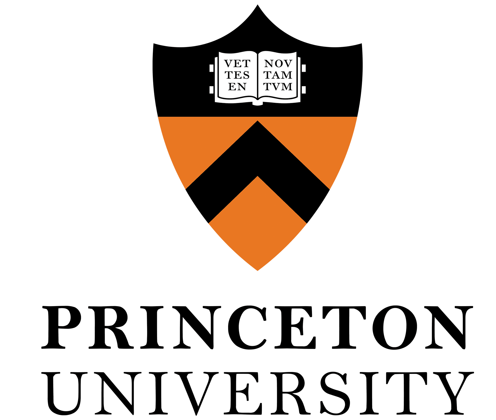

Princeton Journal of Interdisciplinary Research
Molten Salt Reactor Feasibility for India's 2070 Net-Zero Goal
Technical and policy feasibility of molten salt reactors as a pathway to India's net-zero commitment, combining nuclear analysis with energy policy frameworks.
Mentor / Dr. George Anwar·UC Berkeley